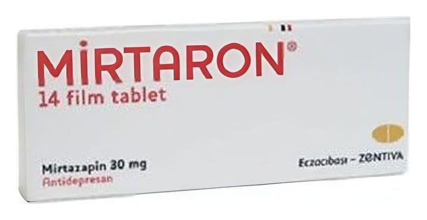

Mirtaron 30 mg Çentikli Film Kaplı Tablet, 14 Adet

Ne için kullanılır
KT · Bölüm 1MİRTARON, antidepresanlar adıyla bilinen bir ilaç grubuna üyedir.
Etkin madde mirtazapindir.
MİRTARON turuncu renkli, oval, bir yüzü bölünebilir çentikli film kaplı tabletlerdir. MİRTARON 30 mg çentikli film kaplı tablet, kutuda 14 ve 28 film kaplı tablet içeren opak PVC/PVDC-Alüminyum blister ambalajlarda bulunmaktadır.
MİRTARON yetişkinlerde depresif bozukluğun (ağır ruhsal çöküntü hastalığı) tedavisinde kullanılır.
MİRTARON’un etkisini göstermesi 1 ila 2 haftayı alacaktır. 2 ila 4 hafta sonra kendinizi daha iyi hissetmeye başlayabilirsiniz. Eğer 2 ila 4 hafta sonra hala iyi hissetmiyorsanız ya da
10 | 12 daha kötü hissediyorsanız doktorunuza danışmalısınız. Daha fazla bilgi için "3. MİRTARON nasıl kullanılır?" bölümüne bakınız.